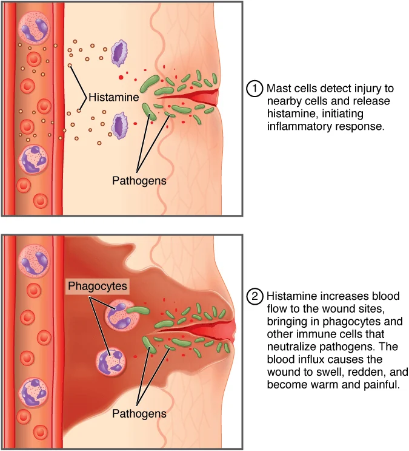

The Immune System
TEAS objective S.1.11 · Human Anatomy & Physiology
What the TEAS expects: you can tell innate from adaptive immunity, name the main immune cells and what they do, and explain active versus passive immunity, including how vaccines work.
1. Two lines of defense
Innate (nonspecific) immunity works the same way against any invader and is ready before an infection starts or acts within minutes to hours. It does not need earlier exposure.
- Barriers: intact skin, mucous membranes, mucus, stomach acid, tears and saliva (which contain the enzyme lysozyme).
- Phagocytes: cells that engulf and digest invaders. Neutrophils arrive first; macrophages are long-lived, large eaters.
- Other white blood cells: eosinophils fight parasites; basophils (like mast cells) release histamine; lymphocytes are the B, T and NK cells; monocytes become macrophages. Neutrophils are the most common white blood cell.
- Natural killer (NK) cells: destroy virus-infected cells and some cancer cells.
- Inflammation: redness, heat, swelling and pain (sometimes with loss of function) at an injury site.
- Fever: a raised body temperature that slows many pathogens.
- Complement proteins and interferons (signals that help nearby cells resist viruses).
Adaptive (specific) immunity targets one particular antigen (a molecule the body recognizes as foreign). It takes days to develop the first time but leaves memory, so the next response is faster and stronger.
- B cells become plasma cells that make antibodies, which tag and neutralize pathogens in body fluids. This is called humoral immunity.
- T cells:
- Helper T cells (CD4) coordinate the response by activating B cells and other T cells. HIV destroys these cells.
- Cytotoxic T cells (CD8) kill infected body cells directly. This is called cell-mediated immunity.
- Memory B and T cells remain after an infection or vaccination.
2. Inflammation, step by step
- Damaged tissue and mast cells release chemicals such as histamine.
- Nearby blood vessels dilate and become leakier: more blood flow brings heat and redness; leaking fluid causes swelling; pressure and chemicals cause pain.
- Phagocytes squeeze out of the vessels and attack the invaders.

Tap or click the figure to open it full size (in a new tab).
Check 1: Why does an infected cut become red and warm? Answer at the bottom of the page.
3. Active versus passive immunity
Swipe the table sideways to see every column. →
| Active (your body makes the antibodies; long-lasting memory) | Passive (you receive ready-made antibodies; temporary, no memory) | |
|---|---|---|
| Natural | Getting the disease and recovering | Antibodies passed to a baby across the placenta or in breast milk |
| Artificial | Vaccination | An injection of antibodies (antiserum or immune globulin) |
How vaccines work: a vaccine shows the immune system a harmless form or piece of a pathogen (or gives your cells instructions to make a harmless piece, as mRNA vaccines do). The body makes its own antibodies and memory cells without having to get sick, so a later real infection meets a fast, strong response.
Antibody classes worth knowing: IgG, the most common, is the only one that crosses the placenta. IgA is in breast milk, saliva and tears. IgM is made first in a new infection. IgE drives allergies.
Check 2: A newborn is protected from measles for a few months by its mother's antibodies. Which type of immunity is this? Answer at the bottom.
4. The lymphatic organs
The immune cells live in and travel through the lymphatic system.
- Red bone marrow: makes all blood cells, including lymphocytes. B cells mature here.
- Thymus: T cells mature here ("T" for thymus).
- Lymph nodes: filter lymph; they swell during infection as lymphocytes multiply.
- Spleen: filters blood and removes old red blood cells.
- Tonsils: guard the throat.
Common traps
- Calling antibodies innate. Antibodies belong to adaptive immunity.
- Saying T cells make antibodies. Plasma cells (from B cells) do.
- Calling a vaccine passive immunity. Vaccines produce active immunity; the body makes its own antibodies.
- Thinking antibodies need a previous exposure. The first exposure produces antibodies too; memory cells are what make the second response faster.
Learn it properly
- Lymphatic organs: OpenStax Anatomy and Physiology 2e, Section 21.1 Anatomy of the Lymphatic and Immune Systems: OpenStax (opens in a new tab)
- Innate defenses: Section 21.2 Barrier Defenses and the Innate Immune Response: OpenStax (opens in a new tab)
- Antibodies and B cells: Section 21.4 The Adaptive Immune Response: B-lymphocytes and Antibodies: OpenStax (opens in a new tab)
Check answers
- Histamine dilates the nearby blood vessels, so more warm blood flows into the area.
- Natural passive immunity.
ESCC TEAS Prep · Original study material written for Eastern Shore Community College. Figures from OpenStax, Anatomy and Physiology 2e, licensed CC BY 4.0.